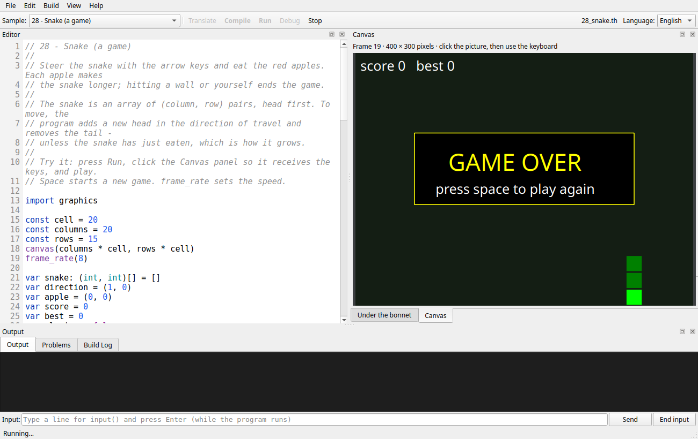
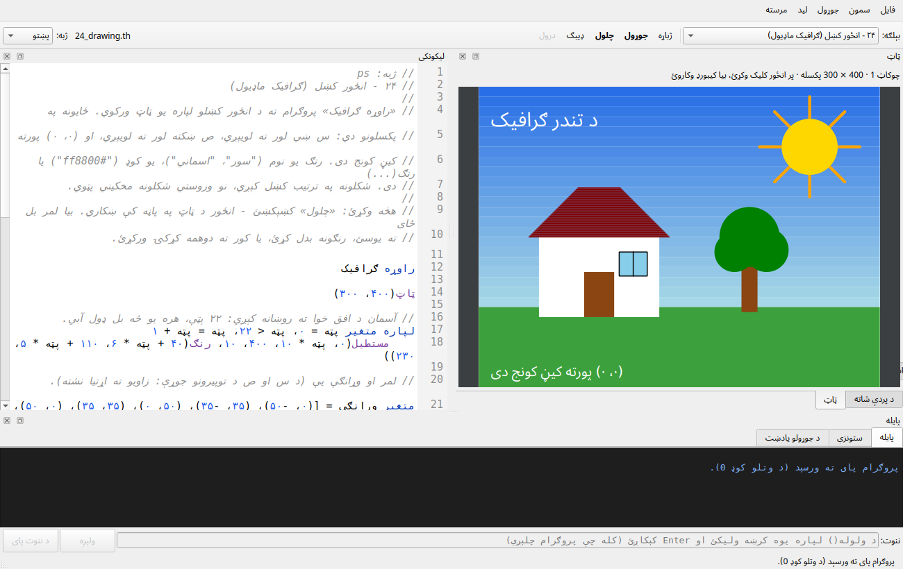

Overview › Guides › The Thunder Graphics Reference
The Thunder Graphics Reference
Part of the Thunder SDK reference.
The built-in module graphics lets a program draw pictures, animate them and react to the keyboard and the mouse. That is enough for simulations, visualisations and simple games. In the IDE the picture appears in the Canvas panel; on the command line it can be saved as an SVG image.
import graphics
graphics.canvas(400, 300)
graphics.clear("navy")
graphics.circle(200, 150, 40, graphics.Color.orange)
graphics.text(10, 10, "Hello, graphics!", graphics.Color.white)import graphics (at the top, without quotes) makes the module available. Every function is then written with the module's name in front, graphics.circle(...), and the colors are the members of graphics.Color. A graphics function without the prefix is error S067 ("'circle' belongs to the module 'graphics': write graphics.circle"); one used without the import is S049. How the built-in modules work in general (and the math and random modules that graphics programs use a lot) is described in the library reference.
Samples 28_drawing to 35_snake (in samples/en/, and in Pashto in samples/ps/) build up from a still picture to a game. In the IDE, this document is under Help > Graphics reference.
| Sample | Shows |
|---|---|
28_drawing | the canvas, coordinates, colors, graphics.rgb, every kind of shape, text |
29_bouncing_ball | an animation loop: clear, draw, graphics.frame(), move |
30_waves | math.sin, math.cos and math.tan plotted and animated; radians and math.pi() |
31_orbits | circular motion: planets on math.cos/math.sin orbits, and a spirograph from two circles |
32_pendulum | math.sqrt, math.exp and math.sin: the pendulum formula against the equation of motion, step by step |
33_fireworks | a particle simulation: structs, gravity, "fixed point" numbers, random.int, filter, mouse clicks |
34_life | Conway's Game of Life: a 2D grid, keys (pause, restart) and mouse drawing |
35_snake | a game: arrow keys, an array of pairs as the snake, collisions, score, game over and restart |
Outside the IDE a graphics program can have a window of its own: thundervm --display sdl program.thc draws it through a display plug-in. The plug-ins are shared libraries with a small C interface, so another one can be written for any graphics library — see the display reference and lib/display/.
1. The canvas#
- Coordinates are whole numbers of pixels.
(0, 0)is the top left corner; x grows to the right and y grows downwards (as on every screen, unlike in mathematics). graphics.canvas(width: int, height: int)sets the size (1 to 2000 pixels each) and clears the canvas to white. Without it, the canvas is 400 × 300 pixels.- Shapes are drawn in order, so later shapes cover earlier ones. Shapes may stick out of the canvas; the part outside is not shown.
- The canvas keeps everything drawn since the last
graphics.clear(...), like paint on paper. An animation therefore starts every frame withgraphics.clear(...). At most 100,000 shapes can be drawn between two clears (runtime errorR024), which catches programs that forget to clear.
Colors#
A color is a member of the graphics.Color enum or a string:
- a
graphics.Colormember (the enum belongs to the module, soimport graphicsbrings it in):graphics.Color.red,.green,.blue,.white,.black,.yellow,.orange,.pink,.gray(or.grey),.brown,.purple,.sky,.gold-graphics.Colouris accepted too. The compiler checks the name, sographics.Color.grenis a compile error (S062) rather than a runtime one;graphics.Color.valueslists them all, and in Pashto they areګرافیک.رنګونه.سور,ګرافیک.رنګونه.زرغون,ګرافیک.رنګونه.شین, ... (see the language reference, section 8, "Enums"). Without the prefix,Coloris not declared (S001); - a name:
black,white,gray/grey,silver,red,maroon,orange,gold,yellow,olive,lime,green,teal,aqua/cyan,sky,blue,navy,purple,fuchsia/magenta,pink,brown. Names are not case-sensitive. Pashto programs may useتور,سپین,سور,زرغون,شین,ژېړ,نارنجي,ګلابي,خړ,نسواري,بنفش,اسماني,طلايي; - a code
"#rrggbb"or"#rgb"in hexadecimal:"#ff8800","#f80"; - the result of
graphics.rgb(red: int, green: int, blue: int): string, each from 0 to 255 (values outside are clamped):graphics.rgb(255, 136, 0)is"#ff8800". This makes colors you can calculate, e.g. a gradient:graphics.rgb(40 + band * 6, 110, 230).
Anything else is runtime error R021.
2. Drawing#
Every coordinate and size is a decimal (float), so a shape can sit wherever the arithmetic puts it — graphics.circle(cx + math.cos(a) * r, cy + math.sin(a) * r, 2.5, "white") needs no rounding. Whole numbers are widened automatically, so graphics.circle(50, 50, 10, "red") is still correct, and a whole coordinate is written back as a whole number in SVG files and frame records. Every color parameter takes a graphics.Color member as well as a string.
| Function | Draws |
|---|---|
graphics.clear(color: string) | fills the whole canvas, removing everything drawn before |
graphics.pixel(x: float, y: float, color: string) | one pixel |
graphics.line(x1: float, y1: float, x2: float, y2: float, color: string) | a line from (x1, y1) to (x2, y2) |
graphics.rect(x: float, y: float, width: float, height: float, color: string) | a filled rectangle; (x, y) is its top left corner |
graphics.rect_outline(x: float, y: float, width: float, height: float, color: string) | the outline of a rectangle |
graphics.circle(x: float, y: float, radius: float, color: string) | a filled circle; (x, y) is its centre |
graphics.circle_outline(x: float, y: float, radius: float, color: string) | the outline of a circle |
graphics.text(x: float, y: float, message: string, color: string) | text; (x, y) is its top left corner, for every script |
| Setting | Effect on what is drawn afterwards |
|---|---|
graphics.line_width(width: float) | width of lines and outlines in pixels (0.1 to 100, default 1) |
graphics.text_size(size: float) | height of text in pixels (1 to 400, default 16) |
A negative width or height draws the rectangle to the left of or above (x, y). A negative radius, and settings outside their range, are runtime error R022, which says what the allowed range is.
There is no "triangle" or "polygon": 28_drawing builds a roof from ever shorter lines, which is also a good loop exercise.
3. Animation#
An animation is a loop that draws one picture, a frame, at a time:
import graphics
var x = 0
while true
graphics.clear(graphics.Color.black) # 1. start from an empty canvas
graphics.circle(x, 150, 20, "orange") # 2. draw everything where it is now
graphics.frame() # 3. show the frame and wait for the next one
x = (x + 4) % 400 # 4. move things a little| Function | Effect |
|---|---|
graphics.frame() | shows the picture, then waits until the next frame is due, so the animation runs at the same speed on every computer |
graphics.frame_rate(fps: int) | how many frames per second graphics.frame() shows: 1 to 120, default 30 |
graphics.show() | shows the picture now, without waiting (for a picture that is built up step by step) |
- A picture that has not been shown when the program ends (a still drawing with no
graphics.frame()orgraphics.show()) is shown then, also after a runtime error, so you can see how far the drawing got. - If a frame takes longer to compute than the frame rate allows, the animation simply runs slower; it does not try to catch up.
- An animation loop usually never ends: press Stop in the IDE. The IDE's safety limit on the number of instructions (which stops accidental endless loops) then applies between two frames rather than to the whole run, so an animation may run for as long as you like.
- For smooth slow movement, keep positions as decimals:
x = x + 0.35moves a third of a pixel per frame. (33_fireworkspredates decimals and keeps positions in tenths of a pixel instead, which is still a useful technique when a program must stay exact.)
4. Keyboard and mouse#
| Function | Result |
|---|---|
graphics.key_pressed(): string | the next key press not yet taken, or "" if there is none |
graphics.key_down(key: string): bool | true while key is held down |
graphics.mouse_x(): int, graphics.mouse_y(): int | the mouse position, in whole canvas pixels |
graphics.mouse_down(): bool | true while the mouse button is held down over the canvas |
Key names are lower case: "left", "right", "up", "down", "space", "enter", "escape", "backspace", "tab", and the letter or digit typed ("a", "7"; with a Pashto keyboard, Pashto letters such as "ب"). In Pashto programs the special keys have Pashto names:
| English | Pashto | English | Pashto | |
|---|---|---|---|---|
left | کیڼ | space | تشه | |
right | ښي | enter | ننوتل | |
up | پورته | escape | وتل | |
down | کښته | backspace | شاته | |
tab | ټب |
graphics.key_down accepts either name.
graphics.key_pressed()is a queue: every press is kept (up to 64) until the program takes it, so a quick double tap is never lost. A game typically takes one key per frame, as35_snakedoes: two quick turns then become two steps instead of a reversal into itself.graphics.key_downsuits continuous movement, e.g.if graphics.key_down("left")thenx = x - 3in every frame.- For a single click, compare with the previous frame:
if graphics.mouse_down() and not was_down ...thenwas_down = graphics.mouse_down()(33_fireworks). - In the IDE, click the Canvas panel so that it receives the keyboard. The IDE gives it the keyboard automatically when the first frame appears.
- On the command line (without the IDE) there are no keys or mouse:
graphics.key_pressed()returns""andgraphics.mouse_down()returnsfalse.
5. Random numbers#
Simulations and games need random numbers. They are in the random module, which every program has, with or without import graphics (see the library reference, "The random module"):
| Function | Result |
|---|---|
random.int(low: int, high: int): int | a random whole number from low to high, both included (low > high is runtime error R023) |
random.float(): float | a random decimal from 0 (included) to 1 (excluded) |
random.seed(seed: int) | restarts the sequence: after the same seed, the same numbers follow |
Without a seed, every run is different. thundervm --seed n (and the golden tests) start from a fixed seed. Thunder uses its own generator (SplitMix64), so a seed gives the same numbers on every operating system and compiler.
6. In the IDE#

- The Canvas panel is a tab next to "Under the bonnet". It comes to the front when the program shows its first frame. Like the other panels, it can be moved, floated in its own window (handy for games) or closed (View > Panels brings it back).
- The picture is scaled to fit the panel, keeping its proportions, so make the panel bigger for a bigger picture. Mouse positions are converted back to canvas pixels.
- The line above the picture shows the frame number and the canvas size.
- Text printed with
printlnstill goes to the Output panel. The Build Log reports how many frames were shown. - The last picture stays visible after the program ends, until you compile or run again.

7. On the command line#
thundervm picture.thc # runs; without a display, nothing is shown
thundervm --svg picture.svg picture.thc # saves the final picture as an SVG image
thundervm --max-frames 100 --svg f.svg anim.thc # stops an endless animation after 100 frames
thundervm --seed 7 game.thc # the same random numbers on every run
thundervm --canvas game.thc # the display protocol, as the IDE uses it (below)Without --canvas, graphics.frame() does not wait (nobody is watching), so a headless run finishes as fast as the computer allows. SVG files open in every web browser.
8. Under the bonnet#
In the VM. The canvas is a list of shapes (include/thunder/graphics.hpp). Each drawing function checks its arguments and appends a shape; graphics.clear() empties the list. graphics.frame() and graphics.show() present the list to a graphics host, an interface with one method, present. thundervm --canvas uses a host that writes to standard output; the tests use one that records the frames. The built-ins are in src/core/vm_graphics.cpp; the shapes, colors, SVG output and the protocol are in src/core/graphics.cpp.
The display protocol (thundervm --canvas) shares the program's normal input and output:
- Each frame is one line on standard output: the ASCII "record separator" character (code
30), then a JSON object, then a line break:
\x1e{"type":"frame","n":12,"width":400,"height":300,"keep":5,"shapes":[["circle",120,80,18,"#ffa500"]]}The IDE already has the first
keepshapes of the previous frame, so a frame that only adds shapes sends just the new ones; after agraphics.clear(),keepis 0. Shapes are arrays:["clear", color],["pixel", x, y, color],["line", x1, y1, x2, y2, color, width],["rect", x, y, w, h, color],["rect_outline", x, y, w, h, color, width],["circle", x, y, r, color],["circle_outline", x, y, r, color, width],["text", x, y, message, color, size]. Colors are always"#rrggbb". - Events are lines on standard input, starting with the same character:
key down left,key up left,mouse 120 45 1(x, y, and 1 while the button is held). All other lines are whatinput()reads.thundervmreads them on a background thread, so a game never waits for the keyboard. - The program's own text cannot start a frame by accident: while
--canvasis on, a record separator in printed text is written as�.
In the IDE. ide/thunder_ide/core/canvas.py separates the records from the text output (a record may arrive in several pieces) and keeps the current picture. That code runs on the thread that reads the program's output, and the GUI paints at most one picture per repaint, so a fast animation cannot flood the interface. ide/thunder_ide/qt/panels.py (QtCanvas) paints the shapes with QPainter and turns keys and mouse movements into event lines.
Why this design? The VM runs in its own process, as it always has, so a stuck program can never freeze the IDE, and the same thundervm works with and without a display. Sending shapes rather than pixels keeps frames small: a typical frame of 35_snake is under 300 bytes, compared with 360 KB for a 400 × 300 bitmap.
9. Error codes#
| Code | Meaning |
|---|---|
S049 | a graphics function used without import graphics |
S067 | a graphics function written without graphics. (circle(...) instead of graphics.circle(...)) |
S062 | a graphics.Color member that does not exist (graphics.Color.gren) |
R021 | not a color |
R022 | a size or setting outside its range (canvas size, radius, line width, text size, frame rate) |
R023 | random.int(low, high) with low > high |
R024 | more than 100,000 shapes since the last graphics.clear() |
10. Pashto names#
The module is ګرافیک and import graphics is راوړه ګرافیک (the English graphics is accepted too, also as the prefix: graphics.دایره). Like the rest of the Pashto vocabulary, these names are drafts that await review by a native speaker.
| English | Pashto | English | Pashto | |
|---|---|---|---|---|
graphics.canvas | ګرافیک.ټاټ | graphics.clear | ګرافیک.ټاټ پاک کړه | |
graphics.pixel | ګرافیک.ټکی | graphics.line | ګرافیک.لیکه | |
graphics.rect | ګرافیک.مستطیل | graphics.rect_outline | ګرافیک.د مستطیل څنډه | |
graphics.circle | ګرافیک.دایره | graphics.circle_outline | ګرافیک.د دایرې څنډه | |
graphics.text | ګرافیک.لیکنه | graphics.text_size | ګرافیک.د لیکنې اندازه | |
graphics.line_width | ګرافیک.د لیکې پلنوالی | graphics.rgb | ګرافیک.رنګ | |
graphics.frame | ګرافیک.چوکاټ | graphics.show | ګرافیک.ښکاره کړه | |
graphics.frame_rate | ګرافیک.د چوکاټ چټکتیا | graphics.key_pressed | ګرافیک.کښېکښل شوې تڼۍ | |
graphics.key_down | ګرافیک.تڼۍ کښېکښل شوې ده | graphics.mouse_x | ګرافیک.موږک افقي | |
graphics.mouse_y | ګرافیک.موږک عمودي | graphics.mouse_down | ګرافیک.موږک کښېکښل شوی | |
graphics.Color (enum) | ګرافیک.رنګونه | random.int | تصادفي.عدد | |
random.seed | تصادفي.بنسټ | random.float | تصادفي.اعشاري |
The graphics.Color members are سور (red), زرغون (green), شین (blue), سپین (white), تور (black), ژېړ (yellow), نارنجي (orange), ګلابي (pink), خړ (gray), نسواري (brown), بنفش (purple), اسماني (sky) and طلايي (gold): ګرافیک.رنګونه.سور.
From Thunder 0.6. The graphics functions used to be written without a prefix (circle(...), Color.red, random_int(1, 6)); they are now graphics.circle(...), graphics.Color.red and random.int(1, 6). The translator does not convert old programs. For a function such as circle, the compiler's S067 message says which prefix is missing; Color and random_int are simply not declared (S001). The library reference, "What changed in 0.7", has the full list.
The Canvas panel is called ټاټ in the Pashto interface. The Pashto samples write coordinates as س and ص (the Arabic-script letters used for x and y in mathematics).